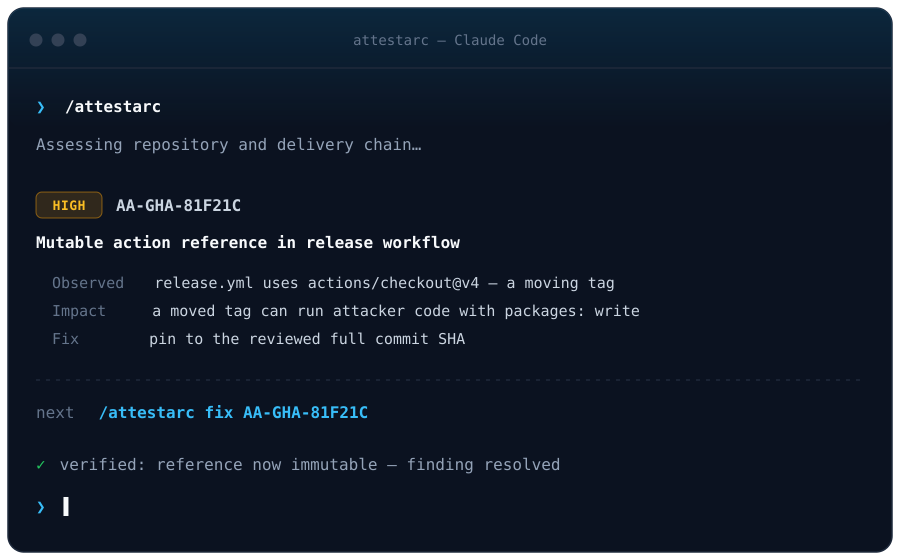

Impact over checklists
Findings are reasoned as an attack path — actor, entry point, capability, asset, impact — not matched against a signature list. You see the few issues that matter, not 72 failed checks.
Agent Skill · Supply-chain security
Security expertise for your coding agent. Install AttestArc and run
/attestarc — it discovers how your repository is
built and delivered, finds the security issues that actually matter, and guides you
through fixing them.
Public Preview — this preview release (0.4.x)
is focused on GitHub and GitHub Actions. It's an expert
assistant, not a comprehensive or stable release: your judgment stays in the loop, and
every finding cites its evidence.

AttestArc is not a dashboard, a scanner service, or a compliance report. It has no runtime, server, or database of its own — it teaches the host coding agent what to inspect, what matters, how to record findings, and how to remediate safely.
Findings are reasoned as an attack path — actor, entry point, capability, asset, impact — not matched against a signature list. You see the few issues that matter, not 72 failed checks.
Every finding cites something observed — a file and line, a diff, a verified remote setting. No evidence, no finding. Remote configuration is never guessed.
Assessment is read-only. Remediation happens only when you ask, and every fix is verified by re-observing the condition. Secret values are never written to disk.
Prerequisites: Python 3.9+ (standard library only) and git.
The GitHub CLI (gh) is optional but recommended for read-only remote checks.
Claude Code natively discovers skills under .claude/skills/.
The simplest install is a clone of a signed release tag (releases are published as
signed, protected git tags):
# Global — available in every repository you open
git clone --branch v0.4.1 --depth 1 \
https://github.com/avishayil/attestarc-skill.git ~/.claude/skills/attestarc
# Or per-project
git clone --branch v0.4.1 --depth 1 \
https://github.com/avishayil/attestarc-skill.git .claude/skills/attestarcPrefer to copy only the skill payload? Clone the repo and run
python install.py (--scope user for a global install). Then run
/attestarc in Claude Code.
Cursor natively supports Agent Skills. It auto-discovers
.cursor/skills/ (and .agents/skills/) and, for compatibility,
also loads .claude/skills/ and .codex/skills/ — so no
.cursor/rules/*.mdc rule is needed. Clone a signed release tag into Cursor's
native skills directory:
# Cursor-native, per-project
git clone --branch v0.4.1 --depth 1 \
https://github.com/avishayil/attestarc-skill.git .cursor/skills/attestarc
# Or reuse a shared Claude skills directory (Cursor reads it too)
git clone --branch v0.4.1 --depth 1 \
https://github.com/avishayil/attestarc-skill.git .claude/skills/attestarcThen invoke /attestarc from Cursor's
Agent chat (skills appear in the / slash search), or just ask Cursor to
“assess this repository's supply-chain security with AttestArc.”
python install.py --platform cursor installs into .cursor/skills/attestarc
for you.
Once installed, use these in your coding agent:
| Command | What it does |
|---|---|
/attestarc | Full relevant assessment of the repository |
/attestarc findings | Show unresolved findings, most important first |
/attestarc fix <id> | Reconfirm, remediate, and verify a finding |
/attestarc verify | Re-check open / remediating findings |
/attestarc changed | Review the security impact of current changes |
/attestarc github-actions | Focus on GitHub Actions |
/attestarc repository | Focus on repository / SCM controls |
/attestarc supply-chain | Focus on release, artifacts, provenance, identity |
AttestArc also loads automatically for clearly relevant requests such as “harden this repo” or “is our release process secure?”
Branch protection, rulesets, CODEOWNERS, review requirements, signed commits, protected tags.
Dangerous trigger combinations, token permissions, mutable action references, untrusted input, runners, OIDC, environments.
Update tooling, lock files, dependency review, and registry configuration.
Static credentials, workload identity, and secret scope.
Build integrity, artifact identity, signing, and provenance.
The security impact of the diff you're working on right now.
Fully supported today: GitHub + GitHub Actions. Other CI systems (GitLab CI, CircleCI, Jenkins…) are detected and reviewed with a generic methodology at lower confidence, and AttestArc says so explicitly.
A configuration fact — a trigger name, a permissions: block,
an id-token: write — is never a finding by itself. AttestArc asserts a finding only
when it can connect that fact, with evidence, into an attack path that reaches something valuable:
If the chain can't be closed with evidence, AttestArc lowers the severity or
records it as needs_review with explicit evidence gaps — telling you exactly what to
check next, instead of an overclaimed alert.